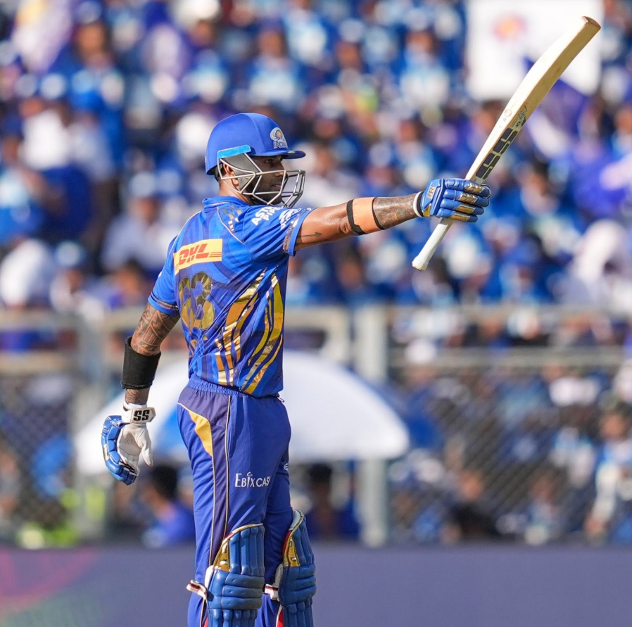

DISCIPLINE • PASSION • GREATNESS

A journey of passion, discipline and determination. From a young dreamer to one of cricket's finest modern players.
Explore Journey →Suryakumar Yadav is a dynamic Indian cricketer known for his fearless and innovative batting style. His ability to play unconventional shots and score rapidly has made him one of the most exciting T20 players. With his aggressive approach and confidence, he continues to inspire cricket fans worldwide.
Represented India in international cricket, especially making a major impact in T20 cricket.
A key player for Mumbai Indians, known for his explosive batting and consistency.
Has captained India in T20 internationals and led with confidence and determination.